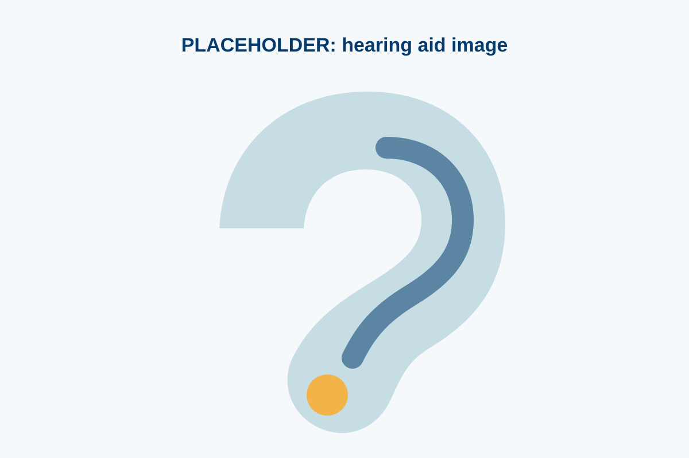

1. Assessment first
Recommendations are based on hearing results, ear health, listening goals, and daily communication needs.
Hearing aids are most helpful when they are selected carefully, fitted properly, adjusted over time, and supported with realistic counselling.

Modern devices can improve access to speech, reduce listening effort in some environments, and help people stay connected. They do not restore normal hearing or remove all background noise, so counselling and follow-up are important.
Recommendations are based on hearing results, ear health, listening goals, and daily communication needs.
Settings are adjusted for comfort, clarity, and gradual adaptation when needed.
Patients return for fine-tuning, cleaning support, and practical advice after trying devices in daily life.
Book a consultation to discuss options after an appropriate hearing assessment.
Book a Consultation